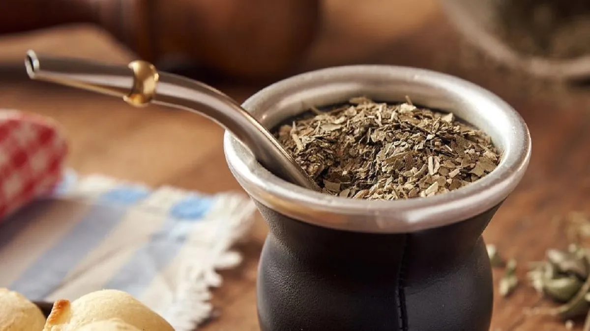

Mate

What is Mate?
Mate is a drink from Argentina and It's a national drink. It can be amargo or soft with sugar
How make it
- Get the materials: Termo, mate, bombilla and yerba.
- Boil water between 75ºC and 85ºC and pour it into the termo.
- Throw 3/4 of yerba into the mate.
- Shake the mate with your hand while you cover the top and try to make a "mountain".
- Pour water over half without yerba up to half.
- Wait a few minutes and put the bombilla into mate.
- Enjoy your first Mate!